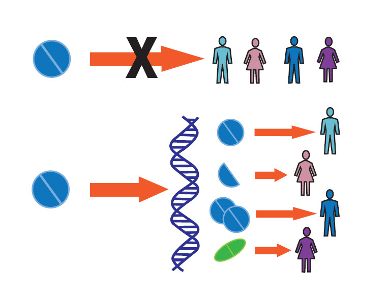
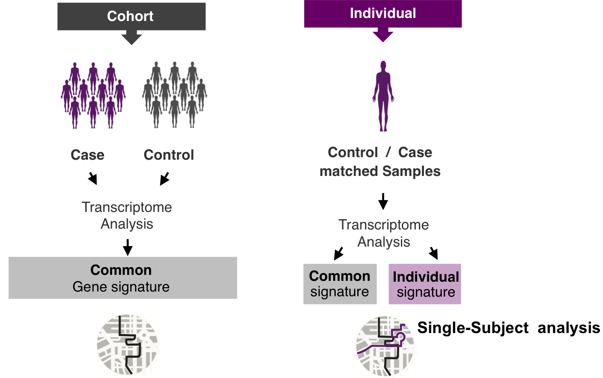
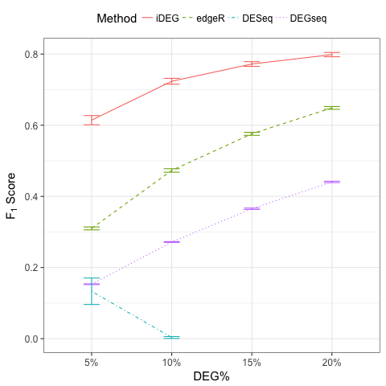

iDEG: a new single-subject method for assessing gene differential expression from two transcriptomes of an individual
Qike Li
qike.li@gmail.com


Outline
- Background
- Methodology–iDEG
- Numerical studies
- Real data analysis
Background
- Precision Medicine
- Single-subject analysis
- Example RNA-Seq quantified mRNA expression data (Single-Subject)
- Our goal
- Main Challenges
- Our solution (iDEG)
Precision Medicine

Single-subject analysis
Single-subject analysis studies one patient at a time, with the purpose of revealing the patient-specific disease mechanism for highly heterogeneous diseases.
Single-subject analysis

Example RNA-Seq quantified mRNA expression data (Single-Subject)
| Gene | Case expression | Baseline expression |
|---|---|---|
| A1BG | 92 | 72 |
| A1CF | 1 | 0 |
| A2BP1 | 0 | 2 |
| A2LD1 | 127 | 71 |
| A2ML1 | 773 | 12 |
| A2M | 11825 | 29385 |
| A4GALT | 871 | 891 |
| A4GNT | 1 | 5 |
| AAA1 | 0 | 0 |
| AAAS | 414 | 460 |
| … | … | … |
Our goal
- How differentially expressed is a gene?
- A meaningful effect size of differential expression
- What is the uncertainty of the measurement?
- A probability of gene differential expression.
Main Challenges
Main challenges in single-subject analysis:
- There are NO within subject replicates.

Main Challenges
Main challenges in single-subject analysis:
- There are NO within subject replicates.
- Different genes have different variances.
- For each gene, we have only two numbers to work with.
Our solution (iDEG)
- Bypass gene-level variance estimation: Transform RNA-Seq data such that, under null hypothesis, all genes have the same variance.
- Borrow strength across genes: model all genes in a single model
Methodology–iDEG
- Data transformation
- Two-group mixture model
Data transformation

Data transformation

Data transformation
Under null hypothesis:
Two-group mixture model
Suppose \(G\) genes are measured in the RNA-Seq experiment, each of the genes is either null or differentially expressed with prior probabilities \(\pi_{0}\) or \(\pi_{1} = 1-\pi_{0}\). And the density function of \(z_{g}\) is either \(f_{0}(z)\) or \(f_{1}(z)\).
The marginal mixture density is:
Two-group mixture model
The local false positive rate, \(fdr\), is the Bayes posterior probability that a gene \(g\) is a null gene given \(z_{g}\):
Two-group mixture model
\(f_{0}\) corresponds to an empirical null distribution.
In large-scale simultaneous hypothesis testing, the theoretical null may be deficient due to various reasons:
- correlation across genes
- unobserved covariates (e.g. gender, age, smoking status, etc.)
- or failed mathematical assumptions (e.g. asymptotic approximation).
Fortunately, in large-scale simultaneous testing, the parallel structure allows the estimation of an empirical null distribution, via empirical Bayes, from the own data of the study.
Numerical studies
- Simulate a single-subject dataset
- Procedure
- Method evaluation
- Sensitivity Analysis
Simulate a single-subject dataset
Simulate a pair of transcriptomes:
Simulate a single-subject dataset
Procedure
- Step 1: Simulate one single-subject dataset, which contains \(p \%\) DEG.
- Step 2: Conduct iDEG, edgeR1, DESeq2, and DEGseq3.
- Step 3: Compute an F1 score for each method,
- Step 4: Repeat Step1-Step3 for 1000 times
- Step 5: Calculate the arithmetic mean and standard deviation of the 1000 \(F_{1}\) resulted from each method.
- Step 6: Change the value of \(p\), repeat Step 1-Step 5
1. Robinson, M. D. et. al., 2010, Bioinformatics; 2. Anders, S. et. al., 2010, Genome biology ;
3. Wang, L. et al., 2009, Bioinformatics
Method evaluation

Method evaluation
| DEG% | Method | Precision | Recall(TPR) | FPR | F1 | Predictions |
|---|---|---|---|---|---|---|
| 5% | iDEG | 0.93 (1.6e-02) | 0.679 (2.5e-02) | 0.003 (7.2e-04) | 0.784 (1.5e-02) | 730.482 (3.4e+01) |
| edgeR | 0.39 (8.4e-03) | 0.948 (7.1e-03) | 0.078 (2.8e-03) | 0.552 (8.6e-03) | 2432.95 (5.4e+01) | |
| DESeq | 0.999 (2.1e-03) | 0.152 (3.8e-02) | 0 (1.8e-05) | 0.262 (5.8e-02) | 152.45 (3.8e+01) | |
| DEGseq | 0.086 (6.7e-04) | 0.985 (3.9e-03) | 0.549 (3.9e-03) | 0.159 (1.2e-03) | 11408.61 (7.4e+01) | |
| 10% | iDEG | 0.945 (1.1e-02) | 0.708 (2.2e-02) | 0.005 (1.1e-03) | 0.809 (1.2e-02) | 1500.32 (5.9e+01) |
| edgeR | 0.447 (6.2e-03) | 0.96 (4.3e-03) | 0.132 (3.3e-03) | 0.61 (6.0e-03) | 4296.19 (6.0e+01) | |
| DESeq | 1 (0.0e+00) | 0 (5.2e-04) | 0 (0.0e+00) | 0.002 (1.4e-03) | 0.44 (1.0e+00) | |
| DEGseq | 0.165 (1.1e-03) | 0.986 (2.5e-03) | 0.556 (4.2e-03) | 0.282 (1.6e-03) | 11974.99 (7.6e+01) | |
| 15% | iDEG | 0.953 (7.0e-03) | 0.746 (1.6e-02) | 0.006 (1.1e-03) | 0.837 (9.1e-03) | 2348.99 (5.8e+01) |
| edgeR | 0.537 (5.7e-03) | 0.964 (3.7e-03) | 0.147 (3.4e-03) | 0.69 (4.8e-03) | 5384.34 (5.9e+01) | |
| DESeq | 1 (NA) | 0 (3.3e-05) | 0 (0.0e+00) | 0.001 (NA) | 0.01 (1.0e-01) | |
| DEGseq | 0.235 (1.4e-03) | 0.986 (2.1e-03) | 0.565 (4.2e-03) | 0.38 (1.9e-03) | 12562.45 (7.3e+01) | |
| 20% | iDEG | 0.962 (4.6e-03) | 0.763 (1.3e-02) | 0.008 (1.0e-03) | 0.851 (7.8e-03) | 3175 (6.4e+01) |
| edgeR | 0.602 (5.7e-03) | 0.966 (2.8e-03) | 0.16 (3.9e-03) | 0.742 (4.4e-03) | 6418.81 (6.4e+01) | |
| DESeq | NaN (NA) | 0 (0.0e+00) | 0 (0.0e+00) | NaN (NA) | 0 (0.0e+00) | |
| DEGseq | 0.299 (1.6e-03) | 0.986 (2.0e-03) | 0.577 (4.2e-03) | 0.459 (1.9e-03) | 13179.58 (6.8e+01) |
Although the Recall/TPR and number of precisions of iDEG are lower than edgeR, iDEG has high precision and low FPR across all percentages of DEG. These operating characteristics of iDEG may be preferable in large-scale inference, like RNA-Seq analysis, where investigators examine tens of thousands of genes in a high-throughput manner.
Sensitivity Analysis
Our experience indicates that without making assumptions on RNA-Seq data, it is difficult to construct suitable statistical inferences for a single-subject dataset. Nonetheless we test the two main assumptions we make:
- The value of dispersion parameter is a function of expression mean.
- The majority of the genes are null genes.
Sensitivity Analysis
- Draw dispersion parameter \(\delta_{g}\) from a uniform distribution \(\text{unif}(0.001, 0.1)\).

Sensitivity Analysis
- Simulate single-subject datasets with a series of percentages of DEG.

Real data analysis
- Data
- iDEG result
- Some interesting genes
Data
A transcriptome of tumor sample and a transcriptome of surrounding healthy sample of an African American woman with Triple negative breast cancer (TNBC).
TNBC is a subtype of breast cancer that has poor prognosis and considerable heterogeneity. It disproportionately affects women with African origin (Dietze et al., 2015). Personalized treatment may be successful for an African American TNBC patient if one could discover a set of her specific DEG and match some of these DEG to the targets of a therapeutic drug.
iDEG result
| Gene | local_fdr | Z |
|---|---|---|
| ADIPOQ | 2.85e-34 | -11.17 |
| PLA2G2A | 2.85e-34 | -11.65 |
| PI16 | 1.15e-33 | -10.78 |
| LEP | 2.25e-33 | -10.70 |
| SFTPB | 1.44e-32 | -10.59 |
| IL33 | 4.24e-31 | -10.36 |
| TUSC5 | 6.74e-31 | -10.32 |
| CSF3 | 2.89e-29 | -10.04 |
| COL6A6 | 3.24e-29 | -10.04 |
| CCL21 | 1.99e-28 | -9.90 |
| … | … | … |
Some interesting genes
- ADIPOQ & LEP: Adiponectin (gene product of gene ADIPOQ) and leptin (gene product of LEP) are considered as mediators for the association of breast cancer with obesity, which is a major risk factor for breast cancer (Nalabolu et al., 2014; Grossmann et al., 2010).
- PLA2G2A: Although PLA2G2A has not been extensively studied for breast cancer, many studies have shown that it inhibits invasion and metastasis of gastric and colon cancer (Ganesan et al., 2008; Movahedian et al., 2016; Fijneman et al., 2009) and may predict survival (Xing et al., 2011).
- TUSC5: Bubnov et al. (2012) has demonstrated the down-regulation of TUSC5 induced by DNA methylation in breast cancer. In contrast to mutated genes, DNA methylation is reversible.
Take home message
We developed a new and effective method to identify differentially expressed genes from two transcriptomes of a single patient.
Acknowledgements

Helen Hao Zhang

Yves A. Lussier
- Haiquan Li
- Joanne Berghout
- Grant Schissler
- Yuan Shang
 spa
spa